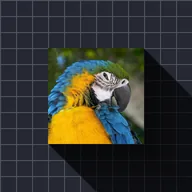

Довга тінь

Відкидає довгі паралельні тіні від непрозорих частин шару.
Налаштування
| Налаштування | Тип | Діапазон | Типово |
|---|---|---|---|
| Кут | Кут | від -3600° до 3600° | 45° |
| Довжина | Число | від 0 до 4000 | 300 |
| Колір | Колір | – | #000000 |
| Альфа | Число | від 0% до 100% | 60% |
| Згасання | Число | від 0% до 100% | 50% |
| Щільність | Число | від 0 до 1 | 1 |